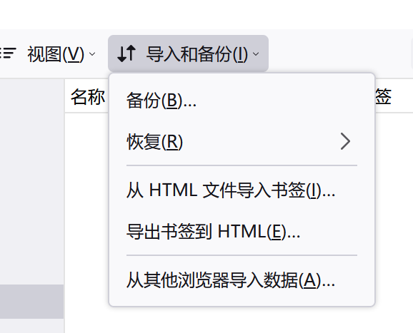
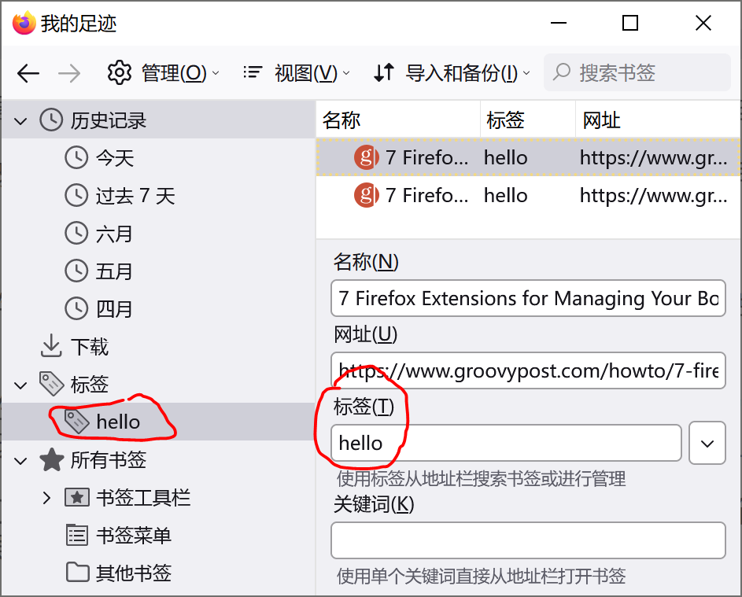
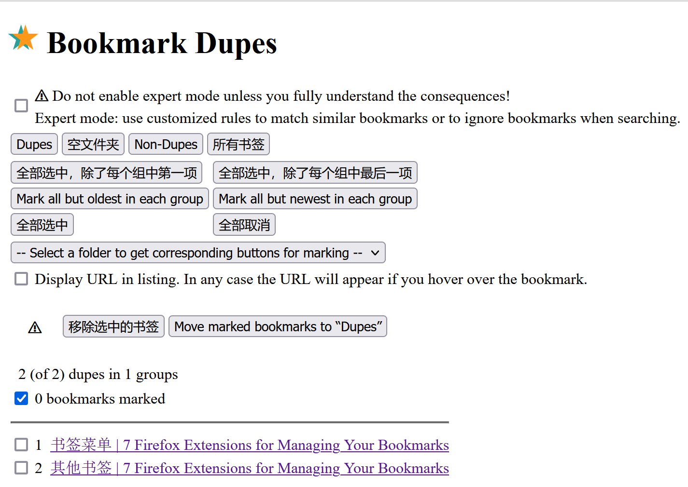
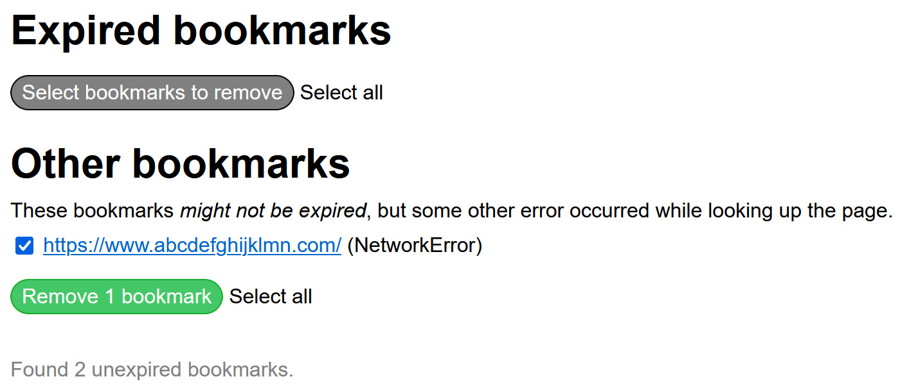

使用 org-mode 管理浏览器收藏
Table of Contents
出于整理浏览器收藏夹的需要，我折腾了一些方法，最后还是选择了使用 org-mode 文本来管理收藏。本文记录了我的一点折腾过程和最后使用 org-mode 保存记录的方法。
本文使用的环境如下：
- emacs 28.1 x86_64 on Windows 10
- Python 3.9 on Windows
1. 起因
至少在三年前我是没有想过这个问题，一台电脑是不需要考虑同步问题的，手机一般也只用来查看一下网页，而没有保留链接的必要。但是两年前情况变了，我因为玩系统的需要组了一台垃圾电脑，这样一来我就有两份收藏夹需要管理。之后除 edge 外我还使用过 firefox，chrome 等浏览器，我面对的就是多台电脑加多个浏览器的情况。这样看上去挺麻烦的，不过我也将就用到现在，这也许说明收藏夹不是什么太重要的东西（笑），毕竟搜索引擎足够强力。
这一时期我对收藏的管理主要在归档和同步两方面，归档主要是通过将链接存入文本文件并放入移动硬盘或网盘来完成，而同步是通过浏览器提供的导入/导出功能，以文件传输的形式完成。不论是 firefox 还是 edge 都提供了 import/export 功能以导入/导出 HTML 形式的收藏夹，非常方便，但我归档的时候似乎没想到这点，还非要手动一条条输链接到 txt 里…
| edge | firefox |
 |
 |
浏览器收藏导入/导出
当然不用我说你也知道，现在一般的浏览器都提供了同步功能。通过在不同机器上登入浏览器账号就可以同步收藏夹。但是我发现 edge 的登入似乎有些困难，时而登的上时而登不上，而 firefox 我也一直懒得注册，也就一直没有用过。
我主要面对的问题就是收藏的同步问题，本文也将主要围绕这个问题展开。其他的什么增删改查算是浏览器收藏管理的基本功能，这些我不会落下。除同步外的另一个重要问题就是分类管理，我们拿它来作为本文主要内容的开始。
2. 浏览器收藏的分类管理
就像文件系统一样，收藏夹不仅允许创建收藏链接，还允许创建收藏文件夹，可在文件夹内存放收藏链接。通过给文件夹命名，我们就可以对收藏链接做一个简单的分类，比如编程，视频，博客，百科等等。如果还要继续细分还可以创建三级甚至二级收藏夹。不过一般最多两级就够了。
这样的层级管理有个问题，那就是链接可能同时具有多种属性，假设我现在发现了一篇讲解在 emacs 中使用数据库的文章，如果我有“数据库”文件夹的话我应该放入其中，但是“emacs”文件夹也应该放一个（一般来说这类文章 emacs 内容更多一些，但是与数据库也是相关的）。这会导致存链接的时候还要纠结一下，几年下来我发现我的“other”分类里面存放了最多的链接，而其他文件夹里面更新间隔很长。
凭我现在来看的话，使用文件夹来分类算是一种非常朴素的思路，相当于是给每个链接打上了一个 tag，这样就方便归类查找。更好的方式也许是在一个大的文件夹内（也许是文件内）存储链接信息，在其他地方存放 tag 信息，单个链接可拥有一个或多个 tag，这样方便对链接进行基于 tag 的查找。当然这两种方式并不冲突，层级分类也可以使用 tag。
在 Edge 中我似乎没有看到 tag 功能，不过 firefox 中有个叫做标签的功能，可以根据标签来寻找链接。
|  |
3. 使用浏览器强化管理
如果对浏览器的默认收藏功能不满的话我们也可以使用一些插件来增强。我平时用 Chrome 用的少，这里就用 firefox 上的插件举例了。我基本上没用过什么浏览器插件，所以这里只是尝鲜，没有长期用户体验陈述。
在开始之前，我们先列出浏览器收藏管理的一些基础功能，这样方便看看增强性插件强在哪里：
- 添加/删除收藏链接，以及批量操作功能
- 查找收藏，可根据网址，名称查找
- 文件夹式分类功能
- 导入/导出功能，方便归档和迁移
- 同步（需要注册账号和网络）
3.1. 清除冗余收藏 Boorkmark Dupes
在 firefox 中已收藏网页的收藏按钮会被标蓝（默认主题下），这个时候点击该按钮只能对链接内容进行编辑而无法再次保存，这样就避免了重复的链接。不过我们可以通过在管理书签（Ctrl+Shift+O）窗口中复制链接，这是一种创建重复链接的方法。日常使用中可能时不时会出现重复的链接，这就造成了冗余。
这个插件的作用就是检测并删除冗余书签。它的界面如下图所示：
|  |
它提供的功能还算丰富，可选择除最新/最旧的重复书签并一件删除。它还提供了使用正则匹配的高级模式，不过一般用不着。
 |
3.2. 清除 404 链接
使用这个插件可以发现并移除已经无法访问的链接，就像这样：
|  |
不过具体的原理我不太清楚，不知道能不能在 emacs 中实现…